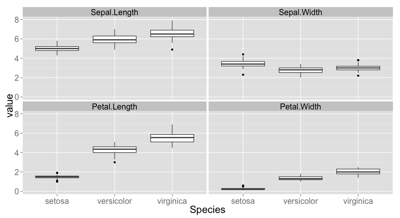
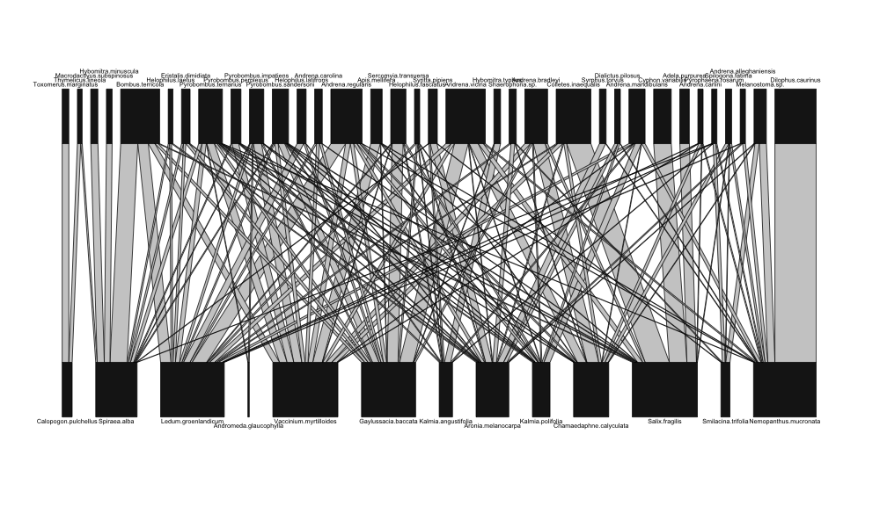
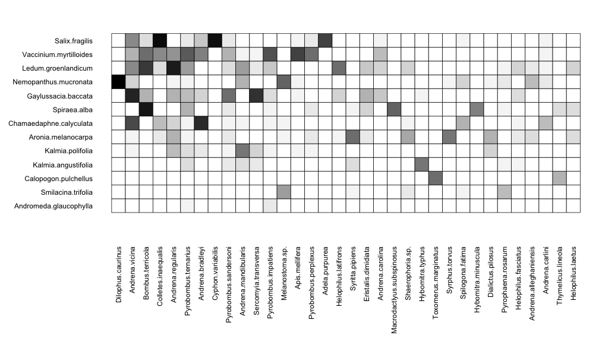
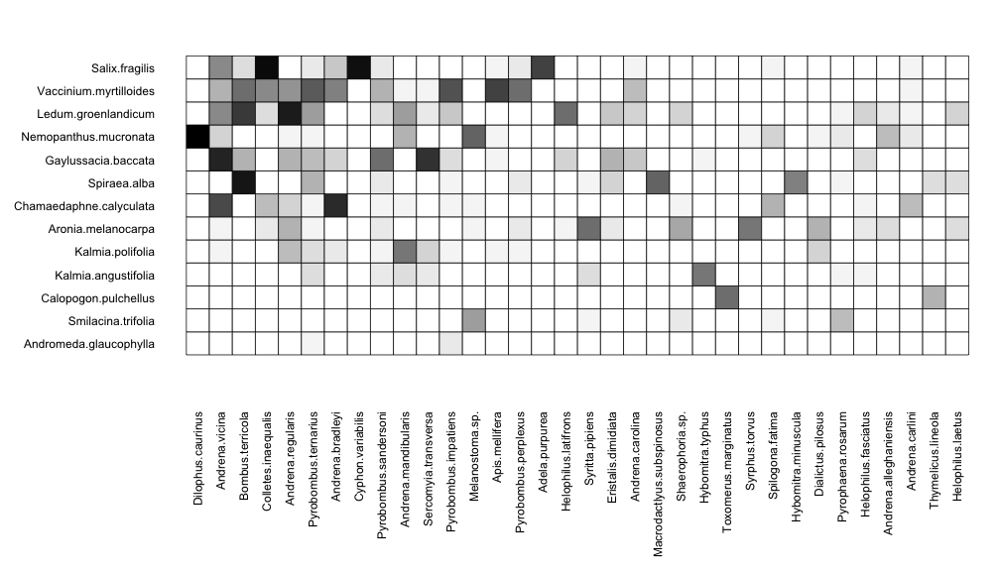
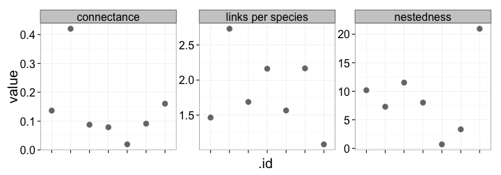
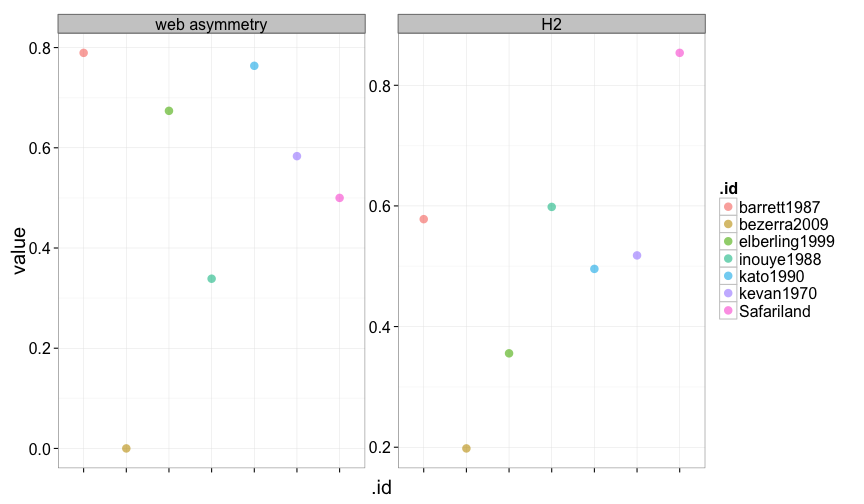
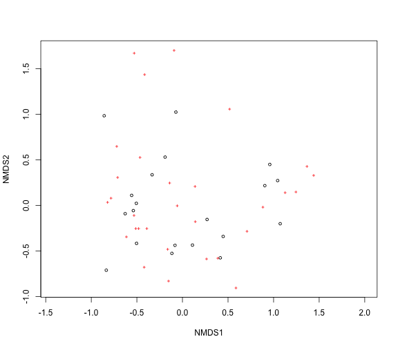
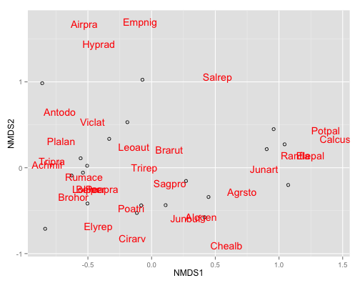

Intro to R
data manipluation, vizualization, communities, networks
Scott Chamberlain
Where to find this presentation
The plan
- Data manipulation
- General visualizations
- Networks/graphs: analyses and viz
- Community ecology: analyses and viz
Data manipulation
plyr + reshape2 =
Intro to subsetting
See here https://github.com/hadley/devtools/wiki/Subsetting
A few quick examples
library(reshape2)
head(iris)[1:3, ]
Sepal.Length Sepal.Width Petal.Length Petal.Width Species
1 5.1 3.5 1.4 0.2 setosa
2 4.9 3.0 1.4 0.2 setosa
3 4.7 3.2 1.3 0.2 setosa
iris_m <- melt(iris, id.vars = 5)
head(iris_m)[1:3, 1:3]
Species variable value
1 setosa Sepal.Length 5.1
2 setosa Sepal.Length 4.9
3 setosa Sepal.Length 4.7
dcast(iris_m, Species ~ variable, fun.aggregate = sd)
Species Sepal.Length Sepal.Width Petal.Length Petal.Width
1 setosa 0.3525 0.3791 0.1737 0.1054
2 versicolor 0.5162 0.3138 0.4699 0.1978
3 virginica 0.6359 0.3225 0.5519 0.2747
What can we do with this?
manipulate, then plot
iris_m <- melt(iris, id.vars=5)
ggplot(iris_m, aes(Species, value)) +
geom_boxplot() +
facet_wrap(~ variable) +
theme_grey(base_size=20)

Your turn
Read in a data file, melt the data, then cast the data, applying a function to that data.
plyr - split, apply, combine
Function naming scheme: first letter of source R object + first letter of output R object + ply
- data.frame = ddply, dlply, daply
- list = llply, ldply, laply
- array/vector: aaply, alply, adply
- matrix: maply , mlply, mdply
data <- data.frame(x = c("a", "a", "b", "b", "c", "c"), y = c(2, 4, 0, 5, 5,
10))
ddply(data, .(x), summarise, mean(y))
x ..1
1 a 3.0
2 b 2.5
3 c 7.5
data <- data.frame(x = c("a", "a", "b", "b", "c", "c"), y = c(2, 4, 0, 5, 5,
10))
data_list <- list(data, data, data)
ldply(data_list, function(z) ddply(z, .(x), summarise, mean(y)))
x ..1
1 a 3.0
2 b 2.5
3 c 7.5
4 a 3.0
5 b 2.5
6 c 7.5
7 a 3.0
8 b 2.5
9 c 7.5
DIY plyr
Perform split-apply-combine for an R object of your choice.
ggplot2 terminology
- ggplot - The main function where you specify the dataset and variables to plot
- geom - geometric objects
geom_point(),geom_bar(),geom_density(),geom_line(),geom_area()
- aes - aesthetics
- shape, alpha (transparency), color, fill, linetype
- scale - Define how your data will be plotted
- continuous, discrete, log
install.packages("ggplot2")
library(ggplot2)
ggplot(data=iris, aes(Sepal.Length, Sepal.Width)) +
geom_point() +
theme_grey(base_size=20)

Building blocks, mix and match
ggplot(data=iris, aes(Sepal.Length, Sepal.Width, colour=Species)) +
geom_point() +
theme_grey(base_size=20)
OR, just do
p <- ggplot(data=iris, aes(Sepal.Length, Sepal.Width, colour=Species))
p <- p + geom_point()
p + theme_grey(base_size=20)
Color by species
ggplot(data=iris, aes(Sepal.Length, Sepal.Width, colour=Species)) +
geom_point() +
theme_grey(base_size=20)

Adjust the size (and color) of points
ggplot(data=iris, aes(Sepal.Length, Sepal.Width, colour=Species)) +
geom_point(size = 6) +
theme_grey(base_size=20)

ggplot(data=iris, aes(Sepal.Length, Sepal.Width, color=Species, size=Species)) +
geom_point() +
theme_grey(base_size=20)

Facet by species
ggplot(data=iris, aes(Sepal.Length, Sepal.Width)) +
geom_point() +
facet_wrap(~ Species) +
theme_grey(base_size=20)

Combine geoms
Combine geom_boxplot and geom_point
ggplot(data=iris, aes(Species, Petal.Width)) +
geom_boxplot() +
geom_point()

Order matters!
ggplot(data=iris, aes(Species, Petal.Width)) +
geom_point() +
geom_boxplot()

Make this plot

Saving plots using ggplot2
If the plot is on your screen
ggsave("~/path/to/figure/filename.png")
If your plot is assigned to an object
ggsave(plot1, file = "~/path/to/figure/filename.png")
Specify a size
ggsave(file = "/path/to/figure/filename.png", width = 6, height = 4)
Or any format (pdf, png, eps, svg, jpg)
ggsave(file = "/path/to/figure/filename.jpg")
ggsave(file = "/path/to/figure/filename.pdf")
Networks
- Visualizations
- Analyses
- Network level metrics
- Species level metrics
Network vizualizations
library(bipartite)
plotweb(small1976)

Another way to visualize networks
visweb(small1976, labsize = 2)
 

Variety of other plotting options
# Eg 1
plotweb(small1976, high.lablength = 3, low.lablength = 0, arrow = "down")
# Eg 2
plotweb(small1976, text.rot = 90, arrow = "down.center", col.interaction = "wheat2",
y.lim = c(-1, 2.5))
# Eg 3
low.abun = round(runif(dim(small1976)[1], 1, 40))
names(low.abun) <- rownames(small1976)
plotweb(small1976, text.rot = 90, low.abun = low.abun, col.interaction = "purple",
y.width.low = 0.05, y.width.high = 0.05)
Network metrics - of the whole community
Start with the bipartite package. Others include X, Y, and Z.
res <- networklevel(small1976, index = "binary")
res
connectance links per species cluster coefficient
0.3190 3.0000 0.3077
nestedness Fisher alpha cluster.coefficient.HL
32.6025 44.9156 0.3727
cluster.coefficient.LL
0.3945
Let's compare some metrics among networks!!!
library(reshape2)
networks <- list(Safariland, barrett1987, bezerra2009, elberling1999, inouye1988,
kato1990, kevan1970)
res <- llply(networks, function(x) networklevel(x, index = c("connectance",
"links per species", "nestedness")))
names(res) <- c("Safariland", "barrett1987", "bezerra2009", "elberling1999",
"inouye1988", "kato1990", "kevan1970")
df <- melt(ldply(res), id.vars = ".id")
ggplot(df, aes(.id, value)) + geom_point(size = 4, alpha = 0.6) + facet_wrap(~variable,
scales = "free") + theme_bw(base_size = 20) + theme(axis.text.x = element_blank())

Make this plot

Species level metrics
splevel <- specieslevel(small1976, index = "degree")
head(splevel[[1]], n = 3)
degree
Adela.purpurea 1
Thymelicus.lineola 2
Macrodactlyus.subspinosus 1
head(splevel[[2]], n = 3)
degree
Salix.fragilis 13
Chamaedaphne.calyculata 13
Nemopanthus.mucronata 13
Species level metrics - roll your own
- Pick a network in the bipartite package
- Calculate one species level metric for all species in that network
- Plot the metrics for each species, both plants and pollinators
Community structure
- Diversity indices
- Rarefaction - comparing diverity in different samples
- Ordination
Diversity indices
Shannon-Weaver
library(vegan)
data(BCI)
bci_subset <- BCI[1:3, ]
head(bci_subset)[, 10:11]
Allophylus.psilospermus Alseis.blackiana
1 0 25
2 0 26
3 0 18
(H <- diversity(bci_subset))
1 2 3
4.018 3.848 3.814
Simpson
diversity(bci_subset, index = "simpson")
1 2 3
0.9746 0.9683 0.9646
Evenness
H <- diversity(bci_subset)
H/log(specnumber(bci_subset))
1 2 3
0.8866 0.8686 0.8476
Rarefaction
nosp <- specnumber(BCI)
nosp_rare <- rarefy(BCI, raremax)
Error: object 'raremax' not found
df <- data.frame(nosp, nosp_rare)
Error: object 'nosp_rare' not found
head(df)
Bellis perennis Empetrum nigrum Juncus bufonius Juncus articulatus xxx
2 3 0 0 0 0
13 0 0 3 0 0
4 2 0 0 0 0
16 0 0 0 3 0
6 0 0 0 0 0
1 0 0 0 0 0
Make this plot

Rarefaction curves
raremax <- min(rowSums(BCI))
rarecurve(BCI, step = 20, sample = raremax, col = "blue", cex = 0.6)

data(BCI)
sp1 <- specaccum(BCI)
sp2 <- specaccum(BCI, "random")
plot(sp1, ci.type = "poly", col = "blue", lwd = 2, ci.lty = 0, ci.col = "lightblue")
boxplot(sp2, col = "yellow", add = TRUE, pch = "+")

Ordination
data(dune)
ord <- metaMDS(dune, trace = 0)
plot(ord)

In ggplot2!
ord_axes <- data.frame(scores(ord))
ord_spp <- data.frame(scores(ord, display = "species"))
ggplot(ord_axes, aes(NMDS1, NMDS2)) + geom_point(shape = 21) + geom_point(data = ord_spp,
aes(NMDS1, NMDS2), shape = 3, colour = "red")

But I want species names
ord_spp$spp <- row.names(ord_spp)
ggplot(ord_axes, aes(NMDS1, NMDS2)) + geom_point(shape = 21) + geom_text(data = ord_spp,
aes(NMDS1, NMDS2, label = spp), colour = "red")

Comparison between treatments
data(dune)
data(dune.env)
dune[1:3, 1:3]
Belper Empnig Junbuf
2 3 0 0
13 0 0 3
4 2 0 0
dune.env[1:3, 1:3]
A1 Moisture Management
2 3.5 1 BF
13 6.0 5 SF
4 4.2 2 SF
help(dune.env)
data.frame(adonis(dune ~ Management * A1, data = dune.env, permutations = 99)$aov.tab)
Df SumsOfSqs MeanSqs F.Model R2 Pr..F.
Management 3 1.4686 0.4895 3.263 0.3416 0.01
A1 1 0.4409 0.4409 2.939 0.1026 0.03
Management:A1 3 0.5892 0.1964 1.309 0.1370 0.21
Residuals 12 1.8004 0.1500 NA 0.4188 NA
Total 19 4.2990 NA NA 1.0000 NA
Do your own ordination
- Take one of the datasets in the vegan pacage
- Pick an ordination method
cca: constrained ordination- add environmental variables to ordination, see
envfit adonis: Permutational Multivariate Analysis of Variance
- Try it out!
Resources
- All this code, etc. are available here, and as slides here
- You can poke around on the The R homepage
- R task views
- Nice R documentation site
- R mailing lists, including general, stats, etc., and ecology!
- Search the R tag on StackOverflow (aka SO): best place to ask questions, fastest response
- Googling R? Use "cran" instead of "R" (cran=comprehensive R archive network): often R help list or on SO